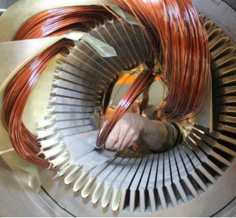
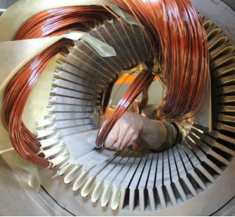

Bobinado de Motores
En Mecatromedical SAC realizamos el servicio de bobinado de motores eléctricos con precisión y materiales de alta calidad. Nos encargamos de devolver la funcionalidad a motores monofásicos y trifásicos utilizados en diversos equipos y aplicaciones.
Nuestro proceso incluye desmontaje, limpieza, rebobinado con hilo esmaltado, impregnación, secado, armado y prueba final. Garantizamos un trabajo duradero, equilibrado y seguro.
 
